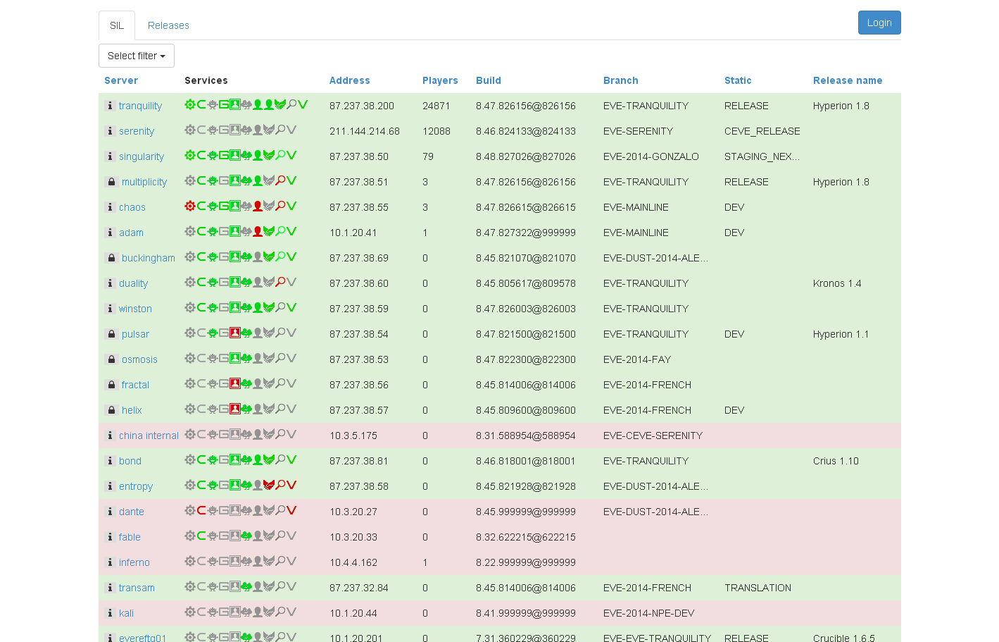

EVE Servers
EVE QA use many different test servers to ensure that the various branches of code that are in development at the same time can be tested. The way that these servers break-down is as follows, though please note that this information is subject to change and should be used only as a rough guide.
The numbers in the square brackets relate to the server address for your client. They are not the same as the ESP URL for each server.
Tranquility [ 87.237.38.200 ] - This is the public EVE Online server.
Singularity [ 87.237.38.50 ] - The Public test server. It is the largest test cluster and is used primarily to debut features in development so that they can be exposed to wider coverage and a greater spread of hardware than is feasible for internal QA to be able to cover. The database is mirrored from Tranquility‘s database quite regularly, though it is pruned of sensitive data.
Please note that when testing on this server - you will be sharing it with the public
Buckingham [ 87.237.38.69 ] - Like the palace. But officially - Buckingham was a public test server for EVE Online while Singularity was used for the closed beta test of DUST 514. After the move of DUST 514 to Tranquility all EVE testing moved back to Singularity and Buckingham is only being used as closed test server for Dust 514.
Multiplicity [ 87.237.38.51 ] - The TQ reference server. Multiplicity usually runs the latest version of TQ although can also be used to test hotfixes prior to live deployment. It is mirrored from TQ like Singularity, but with less regularity. In general defects should always be reproduced on Multiplicity as a bare minimum before they are entered into the database.
Chaos [ 87.237.38.55 ] - The principle development server. Chaos runs the MAIN branch of code and is used to test the development of the next expansion. Chaos runs on its own database and is not TQ mirrored. Bug hunters have access to Chaos as well as to Multiplicity and Singularity.
Pulsar [ 87.237.38.54 ] - Usually found running EVE-STABLE, Pulsar is the main server for running regression sprints on. A "demo" build is created at the beginning of each sprint from MAIN (or other servers as appropriate) and placed on Helix and Pulsar.
Helix [ 87.237.38.57 ] - Helix is the principle demo server for CCP. Each sprint a new build is created and the scrum teams will demo their progress to the stakeholders, as well as anyone who wishes to attend. They will then answer questions about their features. It is rare for the server to be used externally.
Winston [ 87.237.38.59 ] - One of the primary internal test servers for DUST 514.
Fractal [ 87.237.38.56 ] - A non-public test server.
EVE Clients
We use EVE clients to connect to the EVE servers - different servers require different builds (although sometimes you may find that servers on the same build as another).
Things to note about EVE clients:
- The folder name for your client is in does not dictate which server it will connect to - the shortcut to your client will do this.
- If copying a client folder to direct to another server - Do not delete your old client - merely rename it and keep it as a back up until you are absolutely sure you won't need it again.
- Altering your shortcut to point the correct build to your test server is a legitimate tactic in a pinch but ideally we want to connect one build to one server at a time - plus changing shortcuts every so often can get confusing.
Connecting to Servers
Different servers require different client builds in order for you to connect to them - this is why we have multiple copies of the client all patched up for different servers. Connecting to a server requires you to have the correct client build for that server.
Verifying a Client Build
In order to determine what build your client is on without opening the client, just:
- Navigate to the Program Folder for your client e.g. C:\Program Files\CCP\TQ
- In this folder locate the Start configuration file.
- Double click on the file (it should open in Notepad).
- Observe the number next to the Build = section.

Verifying a Server Build
If you're unsure which build is required to connect to a server - open up the ESP page for that server. On the landing page you will see information detailing which build and branch the server is currently running, you can then verify this information against your client.

Client Shortcut
To connect a server, just alter the target in the shortcut for your respective client -
C:\Program Files\CCP\[ Server Name - Folder ]\eve.exe" /[Server Address] /minidump
The above shortcut will open the launcher for your client and direct it to the specified server.
Please note that not all servers are supported by the launcher but the main test servers are supported (Sisi, Multi and Chaos).
If you are having issues with the launcher you can
create a by-pass. Information for which can be found in the Launcher bypass section on the
Patch Master page. Alternative,
ask the Patch Master for some help.
Shortcut Switches
There are a few switches that you can apply to your shortcut in order to modify how it functions.
- /build:000000 - This will force the client to patch to the specified build
- /skipupdate - This will force your client to ignore the published update
- /triPlatform=dx9 - This will force the client to run on the specified DX version
For more information on the primary build switches, please refer to the
Patch Master page.
Server Services
In order for EVE to function, a variety of separate services need to run. Unfortunately, sometimes these services aren't running/aren't supported by the test servers. The key services you should be aware of are:
- SSO [ Single Sign-On ] - This is the service used by the launcher. You need to log in through the launcher in order to use the New Eden Store.
- Sphinx - This is EVE's search function.
- Paparazzi - This service renders and stores player avatar pictures.
- VGS - Virtual Goods Store this is the service used to manage the NES.
Server Information List
The Server Information List [
SIL] is a CCP tool that allows us to check on the state of all test servers. The page displays information about each service and there status as well as what build the server is running.
Supporting services:
- EVE API
- CREST
- Deployment Console
- EVE Gate - Website services
- Image Server
- Mr Cluster
- Paparazzi
- SSO - Single Sign On
- Sphinx Search - The search function in game
- Virtual Goods
